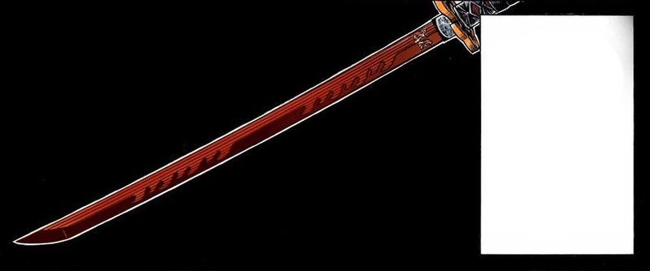

Início › Equipamento
Armas
Armas alternativas, armas de fogo, explosivos, projéteis e venenos do arsenal de 1934.
As lâminas nichirin principais e seus danos estão em Ataques Básicos; as descrições completas de cada lâmina estão nas Subclasses do Espadachim.

Armas Principais Alternativas
Devido a um influxo de minério de nichirin, o Esquadrão, tentando aumentar as taxas de sucesso, passou a forjar novas armas que podem harmonizar melhor com certos caçadores. São as “armas alternativas” — podem sim ser usadas para técnicas de respiração, mas exigem adaptação: com elas, as técnicas de respiração passam a exigir rolagem. Cada uma carrega um bônus (Dádiva) e um efeito negativo (Ônus).
- Ōdachi | 1d12
- Uma espada grande, massiva e curva, capaz de fender armadura, carne e osso. Dádiva: +1 dado de dano ao dano causado e +1,5 m de alcance. Ônus: todos os ataques básicos têm −5 para acertar.
- Naginata | 1d10
- Arma de haste longa com lâmina curva de um só gume na ponta. Dádiva: +3 m de alcance em todos os tipos de ataque. Ônus: o alcance corpo a corpo da naginata começa a 1,5 m de distância — nada mais perto pode ser atingido.
- Cutlass · Patta · Espada-Gancho
- (listadas sem descrição no material original)
Armas de Fogo
Atirar: em combate exige um teste de Fineza para acertar; some sua Precisão às rolagens de dano. Fora de combate, use Precisão para acertar. Comprar: facilmente compráveis na propriedade do Esquadrão ou em lojas de caça nas cidades; costumam ser caras, mas duráveis. Recarregar: toma uma ação completa em combate (itens como carregadores rápidos podem mitigar isso em algumas armas).
Rifles — alcance 36 m (1d12 + Precisão)
- Arisaka Tipo 38 — rifle de ferrolho, arma padrão dos caçadores na era Taishō: calibre 6,5 mm, carregador interno de 5 tiros e encaixe de baioneta. (5 tiros)
- Winchester Model 1895 — rifle de alavanca em .30-06 Springfield, favorito pela cadência rápida, robustez e versatilidade. (4 tiros)
- Mauser Karabiner 98k — rifle de ferrolho em 7,92×57 mm Mauser, potente e preciso. (5 tiros)
Pistolas — alcance 18 m (1d8 + Precisão)
- Mauser C96 — semiautomática em 7,63×25 mm Mauser, com o inconfundível cabo “broomhandle” e carregador destacável. (10 tiros)
- Nambu Tipo 14 — semiautomática japonesa em 8 mm Nambu, de ação suave e design simples. (8 tiros)
- Colt M1911 — semiautomática americana em .45 ACP, amplamente reconhecida pela confiabilidade e poder de parada. (7 tiros)
Munição
- Padrão — Pistola: bala de chumbo comum; boa exatidão e penetração decente. (dano padrão de pistola)
- Ponta Oca — Pistola: ponta escavada que expande no impacto, causando dano severo a tecidos moles e órgãos. (+3 de dano em pistolas)
- Padrão — Escopeta de Trincheira: cartucho básico de balins; útil a média distância, com boa dispersão. (dano padrão)
- Hálito de Dragão — Escopeta de Trincheira: cartucho com composto de magnésio que inflama no impacto e cria um clarão de fogo, ideal contra grupos. (adiciona efeito de atordoamento ao dano)
- Padrão — Rifle: bala de chumbo comum; boa exatidão e penetração decente. (dano padrão de rifle)
Modificações de Armas de Fogo
Armas de fogo aceitam uma única customização, que pode alterar recursos ou adicionar bônus. Mais customizações exigem habilidades como Armeiro. Independentemente da quantidade, podem ser trocadas entre combates, desde que haja meios de trabalhar nelas.
- Silenciador: abafa o som; atirar não revela sua posição e concede +2 em testes de Furtividade após o disparo.
- Carregador Estendido: dobra a capacidade do carregador, reduzindo a frequência de recarga.
- Luneta: estende o alcance da arma em 50% e concede +1 em testes de Fineza para tiros mirados.
- Baioneta: adiciona opção de ataque corpo a corpo de 1d8 usando Força ou Fineza.
- Coronha: +1 em rolagens de Precisão e reduz penalidades por atirar em movimento.
Armas Auxiliares
Granadas
- Granada Tipo 97: granada de fragmentação japonesa; 20 de dano na detonação, raio de 3 m.
- Granada US MK2: a clássica “abacaxi” americana; 25 de dano em raio de 3 m.
- Coquetel Molotov: arma incendiária; 1d8 de dano de fogo por rodada, raio de 4,5 m, por 3 rodadas.
Outros
- Lança-chamas: arma devastadora de curto alcance que libera um cone de fogo causando 3d6 de dano de fogo a todos os alvos num cone de 6 m; atingidos fazem teste de Fineza (CD 14) ou pegam fogo, sofrendo 1d6 de dano de fogo no início do turno por 3 turnos. (10 usos)
Projéteis de pós-efeito
- Bombas de Arremesso: pequenos explosivos de mão, ferramenta comum do Esquadrão. Podem ser lançadas como ação bônus antes de um golpe e exigem teste de Fineza para de fato detonar. (1d4 a 10d4) — sempre que usadas, role 1d10 e some sua Fineza base para determinar a quantidade de rolagens de 1d4 de dano.
- Kunai de Glicínia: arma especializada dos caçadores, infundida com veneno de glicínia que pode ser mortal para demônios. Ponta afiada e peso equilibrado, versátil para combate próximo e arremesso. (1d6 — inflige Veneno Enfraquecedor no alvo: −1 de FORÇA e FINEZA.)
Projéteis Simples
Para usar e arremessar projéteis em combate, use Fineza para lançá-los, somando a Precisão à rolagem de dano.
- Besta: compacta e mortal, favorita de caçadores e assassinos; dispara virotes com força significativa. Alcance: 18 m [1d12 + Precisão]
- Arco: clássico dos arqueiros habilidosos; lança flechas com exatidão e potência a distância. Alcance: 12 m [1d8 + Precisão]
- Kunai: ferramenta versátil de combate e utilidade; arma tipo adaga que pode ser arremessada ou usada corpo a corpo. Alcance: 1,5 m × Força [1d6 + Precisão]
- Shuriken: ágil e furtiva; pequenas estrelas de arremesso, também usáveis de perto para golpes rápidos e precisos. Alcance: 9 m [1d4 + Precisão]
Veneno e Cultivo
Aplicar veneno é prática comum no Esquadrão: consiste em revestir uma arma com o veneno líquido de glicínia de fornecimento oficial. Requer uma ação e pode ser feito em quase qualquer arma com lâmina ou ponta. Os venenos básicos vêm em duas formas:
- Veneno de Glicínia: Enfraquecedor — derivado da planta de glicínia, misturado com outros ingredientes naturais para criar uma toxina potente. Causa ardor no contato com carne de demônio e entra na corrente sanguínea. Efeito: −1 de Força e Fineza do demônio a cada rodada infectado.
- Veneno de Glicínia: Danoso — criado com os mesmos ingredientes, mas com concentração maior de extrato de glicínia; espalha-se rápido, causando dor intensa e debilitando os movimentos. Efeito: −10% de vida por rodada ao demônio infectado. Não afeta demônios de nível Lua.
Veneno acumulável: para alguns caçadores, envenenar um demônio é só o começo. Venenos de todo tipo acumulam no demônio até serem purificados, causando dano ou efeitos negativos crescentes a cada rodada em que ele é atingido por outra dose.
Kits
- Kit de Cultivo de Veneno: todos os materiais para criar venenos variados — frascos de químicos, balança, almofariz e pistilo, e um manual detalhado de mistura e manuseio seguro. Requer teste de Ciência.
- Kit de Remédio contra Veneno Demoníaco: projetado para curar afetados por venenos de demônio. Inclui antídotos e ervas medicinais, agulhas e linha para fechar ferimentos, e um pequeno manual de uso para cada tipo de veneno. Requer teste de Medicina.